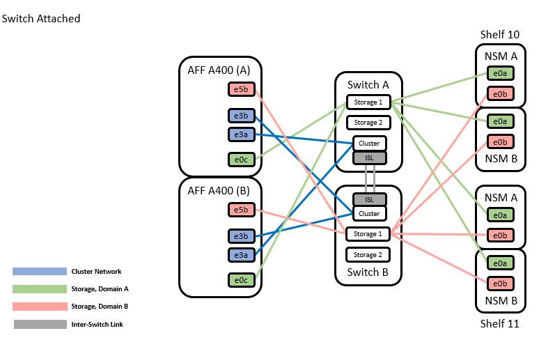
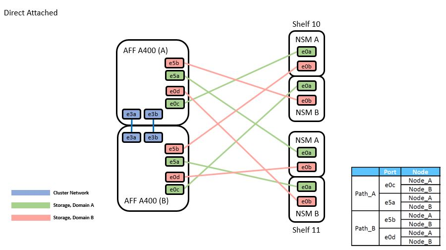
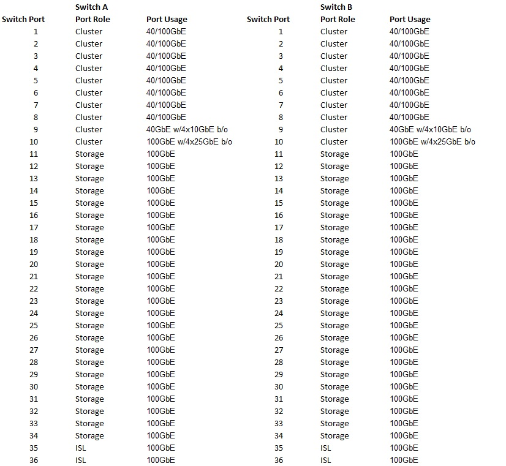
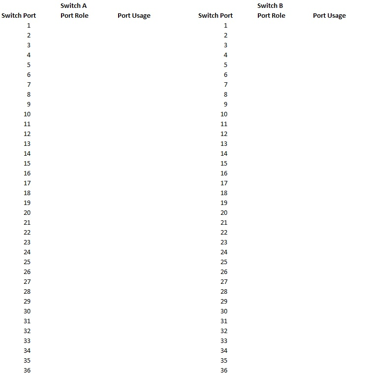

要求變更文件
要求變更文件 編輯此頁面
編輯此頁面 瞭解如何作出貢獻
瞭解如何作出貢獻Cisco共享交換器的設定與組態指南
支援的交換器ONTAP
從S299.1開始ONTAP 、您可以使用Cisco Nexus 9336C-FX2交換器、將儲存設備和叢集功能結合到共享交換器組態中。如果您想要建置ONTAP 具有兩個以上節點的叢集、您需要兩個支援的網路交換器。
支援下列Cisco共用網路交換器。
Nexus 9336C-FX2
您可以將Cisco Nexus 9336C-FX2交換器（X190200/X190210）安裝在NetApp系統機櫃或第三方機櫃中、並附有交換器隨附的標準支架。
下表列出9336C-FX2交換器、風扇和電源供應器的零件編號和說明：
| 產品編號 | 說明 |
|---|---|
X190200-CS-PE |
N9K-9336C-FX2、CS、PTSX、36PT10/25/40/100GQSFP28 |
X190200-CS-PI |
N9K-9336C-FX2、CS、PSIN、36PT10/25/40/100GQSFP28 |
X190002 |
配件套件X190001/X190003 |
X-NXA-PAC-1100 W-PE2 |
N9K-9336C AC 1100 W PSU -連接埠側邊排氣氣流 |
X-NXA-PAC-1100 W-Pi2 |
N9K-9336C AC 1100 W PSU -連接埠側進氣 |
X-NXA-FAN-65CFM-PE |
N9K-9336C 65CFM、連接埠側邊排氣氣流 |
X-NXA-FAN-65CFM-PI |
N9K-9336C 65CFM、連接埠側進氣氣流 |
設定交換器
如果您還沒有必要的組態資訊和文件、您必須先收集這些資訊、然後再設定共用交換器。
-
您必須能在安裝站台存取HTTP、FTP或TFTP伺服器、才能下載適用的NX-OS和參考組態檔（RCF）版本。
-
您必須擁有所需的共享交換器文件。
請參閱 [Required documentation for shared switches] 以取得更多資訊。
-
您必須備有必要的控制器文件和ONTAP 參考文件。
請參閱 "NetApp ONTAP 產品文件"。
-
您必須擁有適用的授權、網路和組態資訊、以及纜線。
-
您必須備妥完整的佈線工作表。

|
除了佈線圖形之外、本指南也提供範例工作表、其中包含建議的連接埠指派和空白工作表、可供您用來設定網路。如需詳細資訊、請參閱 "Hardware Universe"。 |
所有Cisco共享交換器都會以標準Cisco原廠預設組態送達。這些交換器也有NX-OS軟體的最新版本、但未載入RCFs。

|
您必須從下載適用的NetApp RCFs "NetApp 支援網站" 適用於您收到的交換器。 |
程序
-
裝入交換器、控制器和NS224 NVMe儲存櫃。請參閱https://docs.netapp.com/platstor/topic/com.netapp.doc.hw-sw-9336c-install-cabinet/GUID-92287262-E7A6-4A62-B159-7F148097B33B.html["在NetApp機櫃中安裝Cisco Nexus 9336C-FX2叢集交換器和傳遞面板"] 指南、以取得在NetApp機櫃中安裝交換器的指示。
-
開啟交換器、控制器和NS224 NVMe儲存櫃的電源。
-
根據中提供的資訊、執行交換器的初始組態 [Required configuration information]。
-
確認您在設定結束時所顯示的顯示器上所做的組態選擇、並確定您已儲存組態。
-
檢查交換器上的軟體版本、必要時將NetApp支援的軟體版本下載到交換器。
如果您下載NetApp支援的軟體版本、則必須下載NetApp網路交換器參考組態檔案、並將其與您儲存的組態合併 步驟3.。您可以從下載檔案和指示 "Cisco乙太網路交換器" 頁面。如果您有自己的交換器、請參閱 "Cisco" 網站。
必要的組態資訊
對於組態設定、您需要適當數量和類型的纜線和纜線連接器、以供交換器使用。視您初始設定的交換器類型而定、您需要使用隨附的主控台纜線連接至交換器主控台連接埠；您也需要提供特定的網路資訊。
所有交換器的必要網路資訊
-
所有交換器組態都需要下列網路資訊：
-
用於管理網路流量的IP子網路
-
每個儲存系統控制器和所有適用交換器的主機名稱和IP位址
-
大部分的儲存系統控制器都是透過e0M介面來管理、方法是連接至乙太網路服務連接埠（扳手圖示）。在E0M介面上AFF 、E0M AFF 介面使用專用的乙太網路連接埠、可在ESIA800和ESIEA700s系統上使用。
-
-
請參閱 "Hardware Universe" 以取得最新資訊。
Cisco Nexus 9336C-FX2交換器的必要網路資訊
對於Cisco Nexus 9336C-FX2交換器、您必須在第一次啟動交換器時、針對下列初始設定問題提供適當的回應。您站台的安全性原則定義了回應和服務、以便：
-
中止自動資源配置並繼續正常設定？（是/否）
回應* yes *。預設值為「否」
-
是否要強制執行安全密碼標準？（是/否）
回應* yes *。預設值為yes。
-
輸入admin的密碼。
預設密碼為admin；您必須建立新的強式密碼。
弱密碼可能會遭到拒絕。
-
是否要進入基本組態對話方塊？（是/否）
在交換器的初始組態中回應* yes *。
-
建立另一個登入帳戶？（是/否）
您的答案取決於您站台的原則、取決於替代系統管理員。預設值為「否」
-
設定唯讀SNMP社群字串？（是/否）
回應*否*。預設值為「否」
-
設定讀寫SNMP社群字串？（是/否）
回應*否*。預設值為「否」
-
輸入交換器名稱。
交換器名稱上限為63個英數字元。
-
是否繼續頻外（mgmt0）管理組態？（是/否）
在該提示字元中以* yes *（預設值）回應。在mgmt0 ipv4位址：提示字元中、輸入您的IP位址：ip_address
-
設定預設閘道？（是/否）
回應* yes *。在「Default-gateway:（預設閘道：）」提示字元的IPV4位址、輸入您的預設閘道。
-
設定進階IP選項？（是/否）
回應*否*。預設值為「否」
-
啟用Telnet服務？（是/否）
回應*否*。預設值為「否」
-
啟用SSH服務？（是/否）
回應* yes *。預設值為yes。
|
|
建議在使用叢集交換器健全狀況監視器（CSHM）進行記錄收集功能時使用SSH。我們也建議使用SSHv2來增強安全性。 |
-
[[step14]輸入您要產生的SSH金鑰類型（DSA/RSA/rsa1）。預設值為RSA。
-
輸入金鑰位元數（1024-2048）。
-
設定NTP伺服器？（是/否）
回應*否*。預設值為「否」
-
設定預設介面層（L3/L2）：
回應* L2*。預設值為L2。
-
設定預設交換器連接埠介面狀態（關機/節點關機）：
使用* noshut*回應。預設值為noshut。
-
設定CoPP系統設定檔（嚴格/中等/輕度/高密度）：
回應*嚴格*。預設為嚴格。
-
是否要編輯組態？（是/否）
此時您應該會看到新的組態。檢閱您剛輸入的組態、並進行必要的變更。如果您對組態感到滿意、請在提示時回答「否」。如果您要編輯組態設定、請使用* yes *回應。
-
使用此組態並加以儲存？（是/否）
回應* yes *以儲存組態。這會自動更新Kickstart和系統映像。
如果您在此階段未儲存組態、下次重新啟動交換器時、將不會有任何變更生效。
如需交換器初始組態的詳細資訊、請參閱下列指南： "Cisco Nexus 9336C-FX2安裝與升級指南"。
共享交換器所需的文件
您需要特定的交換器和控制器文件來設定ONTAP 您的整套功能。
若要設定Cisco Nexus 9336C-FX2共用交換器、請參閱 "Cisco Nexus 9000系列交換器支援" 頁面。
| 文件標題 | 說明 |
|---|---|
提供有關站台需求、交換器硬體詳細資料及安裝選項的詳細資訊。 |
|
"Cisco Nexus 9000系列交換器軟體組態指南" （請選擇安裝在交換器上的NX-OS版本指南） |
提供您需要的初始交換器組態資訊、然後才能設定交換器ONTAP 以供執行故障操作。 |
"Cisco Nexus 9000系列NX-OS軟體升級與降級指南" （請選擇安裝在交換器上的NX-OS版本指南） |
如ONTAP 有必要、提供如何將交換器降級至支援的交換器軟體的相關資訊。 |
提供Cisco所提供之各種命令參考資料的連結。 |
|
說明Nexus 9000交換器的管理資訊庫（MIB）檔案。 |
|
說明Cisco Nexus 9000系列交換器的系統訊息、資訊訊息、以及其他可能有助於診斷連結、內部硬體或系統軟體問題的訊息。 |
|
"Cisco Nexus 9000系列NX-OS版本資訊" （請針對安裝在交換器上的NX-OS版本選擇附註） |
說明Cisco Nexus 9000系列的功能、錯誤和限制。 |
提供Nexus 9000系列交換器的國際機構法規遵循、安全及法規資訊。 |
Cisco Nexus 9336C-FX2纜線詳細資料
您可以使用下列纜線映像來完成控制器與交換器之間的纜線連接。如果您想要將NS224儲存設備連接成交換器、請依照交換器附加的圖表進行：

如果您想要將NS224儲存設備連接成直接附加的連接埠、而非使用共用交換器儲存連接埠、請依照直接附加的圖表進行：

Cisco Nexus 9336C-FX2纜線工作表
如果您想要記錄支援的平台、您必須使用完整的佈線工作表範例作為指南來填寫空白的佈線工作表。
每對交換器的連接埠定義範例如下： 
其中：
-
100G ISL至交換器A連接埠35
-
100G ISL至交換器A連接埠36
-
100G ISL至交換器B連接埠35
-
100G ISL至交換器B連接埠36
空白的佈線工作表
您可以使用空白的佈線工作表來記錄叢集中支援作為節點的平台。支援的叢集連線表Hardware Universe 定義平台所使用的叢集連接埠。

其中：
-
100G ISL至交換器A連接埠35
-
100G ISL至交換器A連接埠36
-
100G ISL至交換器B連接埠35
-
100G ISL至交換器B連接埠36